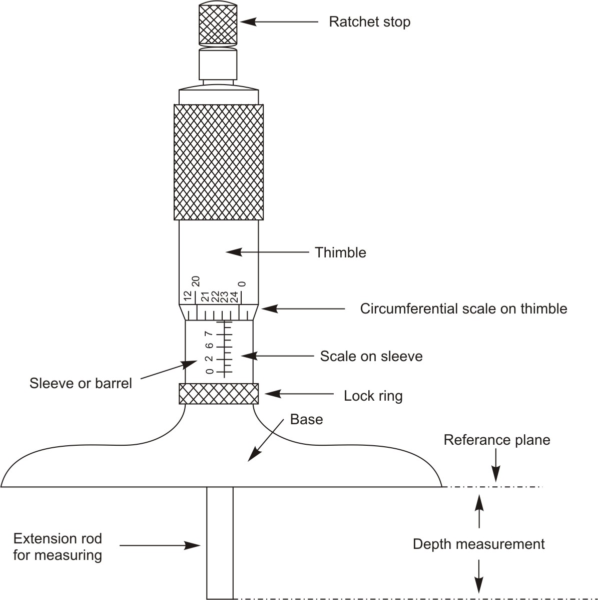
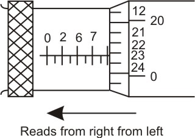
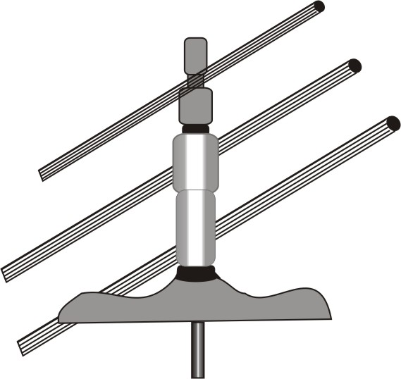
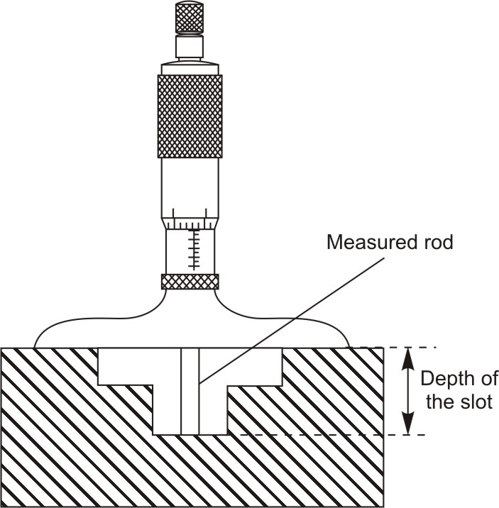
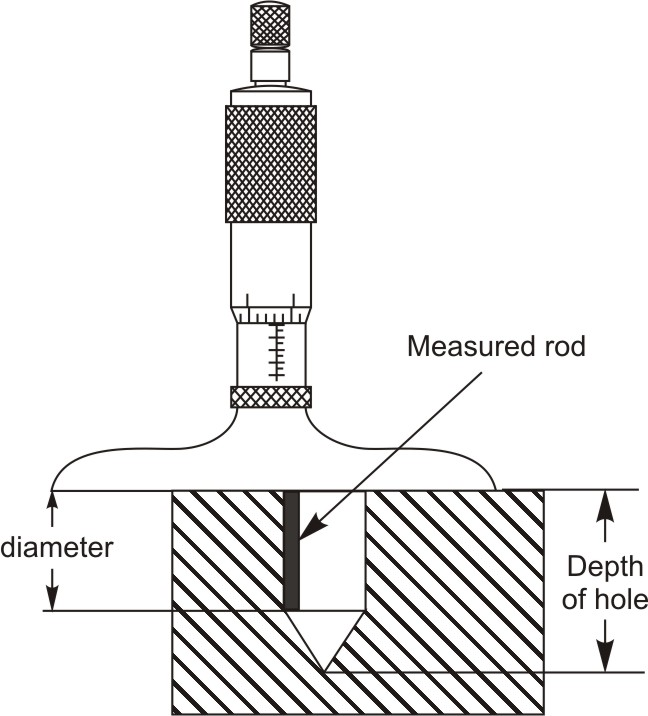
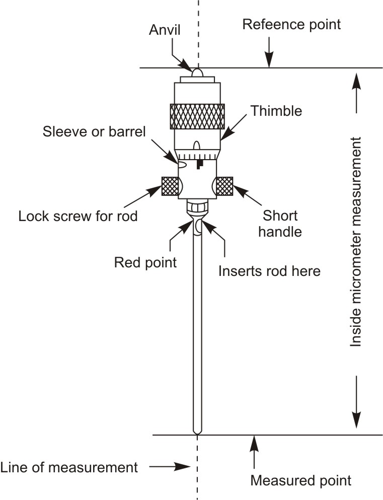
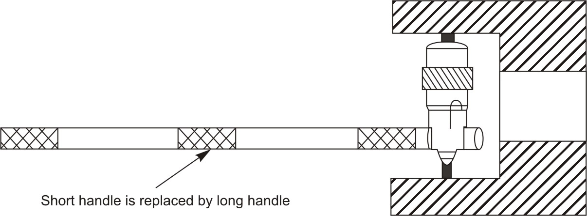
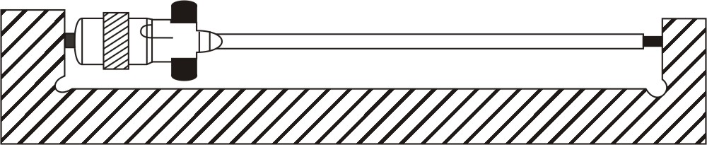
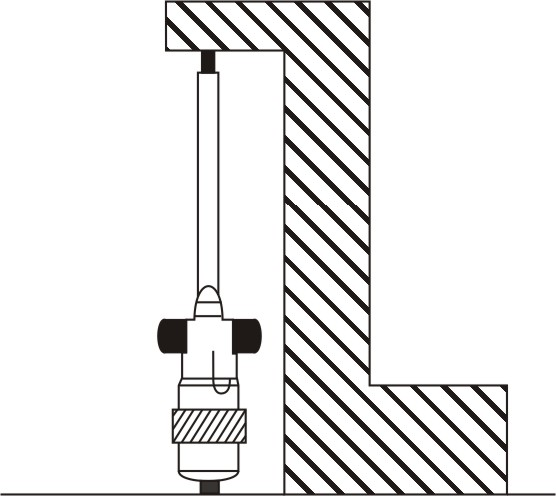
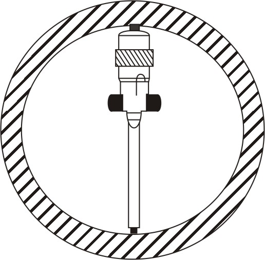

Figure 1: Depth micrometerAnother type of micrometer is a depth micrometer. It is an accurate and reliable tool for depth measurement. This micrometer is used to find the distance between two parallel surfaces i.e. depth of holes, slots, shoulders and projections.
This micrometer has the same thimble and sleeve as outside micrometer. It is available both in English and metric systems. The range of measurement for depth micrometer is also one inch or 25 mm. Further this range can be increased by using interchangeable measuring extension rods.
Depth micrometers measure from a reference plane to a point. The large base of the depth micrometer makes up the reference plane. The very small area of the measuring rod makes up the point of contact. With a depth micrometer it is important that the area in which the reference base of the depth micrometer makes contact with the workpiece is clean and free of dirt or burrs.
The depth micrometer reads in reverse from other micrometers.

Figure 2: Depth micrometers read from the right to the leftDepth micrometers usually come in sets with different length depth measuring extension rods allowing the measuring tool to be used over a broader range of depths.

Figure 3: Additional interchangeable extension rods of different lengths with depth micrometerA common use of this micrometer is to find the depth of a machined hole. The base of the micrometer is placed on the top of the part. The extension rod is moved down into the hole with the thimble. When the rod reaches the bottom, the reading is noted on the scale. When using a depth micrometer, ensure that the base is seated firmly on the two parallel surfaces. Extend the extension rod carefully until it touches the bottom of the area to be measured. Ensure that the extension rod is perpendicular.

Figure 4: Setting a depth micrometer for taking measurementWhen measuring the depth of a drilled hole, it is important to measure at the outside wall of the hole to obtain the depth of the full diameter portion of the hole. Hold the measuring rod next to the wall of the drilled hole to assure an accurate full diameter depth measurement.

Figure 5: Drilled holes are typically measured to full diameter depthDepth micrometers come in a variety of styles. Each style is designed for a certain set of circumstances.
Depth micrometers can also be purchased with very small rods. Rods of small diameters are available for measuring very narrow slots, recesses or the depths of small holes.
The inside micrometer is direct measuring tool used for measuring the diameter of holes or can be used to measure the accuracy of parallel planes. The inside micrometer is very similar to the outside micrometer, except that it has no Frame. Inside micrometers are available both in English and metric system.

Figure 6: Inside micrometerThe total length of the inside micrometer is itself the overall length being measured. The inside micrometer is a much more accurate measuring tool, for inside measurement, than the caliper but taking measurement with it is some what more complicated than any other micrometer. Only one micrometer head is used along with different number of interchangeable measuring extension rods to cover a broad range of measurements. To obtain different ranges of measurement interchangeable measuring extension rods are assembled into the micrometer head. Reading an inside micrometer is similar to reading a standard micrometer except that extension rod and collar lengths must be added to the head measurement. The scale on the inside micrometer works and is read just like that of the outside micrometer.
It takes a little more practice to get an accurate measurement with an inside micrometer. For an accurate measurement the micrometer must be positioned perfectly straight at right angles to the centerline of the hole being measured. If not, you will get an incorrect reading. Then move one end back and forth slightly to get the maximum reading on the scales. It is always a good idea to take two or three additional readings as a check.
In some cases a micrometer handle is used to reach into inaccessible places or in small areas where the fingers would get in the way.

Figure 7: Measuring small diameter using long handle for holding the micrometer
Figure 8: Measuring length using extension rod
Figure 9: Measuring heightWhen using the inside micrometer it is necessary to rotate the head end of the micrometer in the axial direction as well as up and down All the while adjusting the head to the proper feel. Rotating the head in this manner assures that the micrometer is accurately centralized in the part.

Figure 10: Measuring large diameter using extension rodIn taking measurements with the micrometer, several precautions are necessary.
| ← Tutorial 6 | Tutorial 8 → |